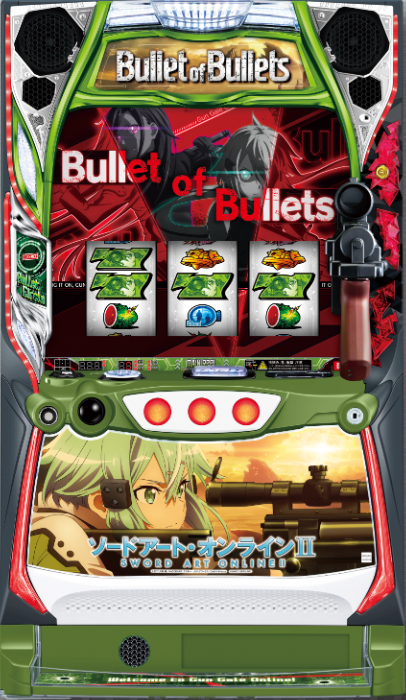

目次

スマスロ ソードアート・オンラインⅡSMART SLOT SAO Ⅱ ｜ 大都技研
⚠️ 差枚数管理型AT・初期150枚+α。CZ「スコードロンバトル」のAT期待度は約55%。GGOモード（4種類）の恩恵差が大きく、高設定ほどモード移行率が優遇されます。
スマスロ ソードアート・オンラインⅡ スペック・機械割
| 設定 | CZ確率 | AT確率 | 機械割 |
|---|---|---|---|
| 1 | 1/238.4 | 1/386.2 | 97.6% |
| 2 | 1/232.3 | 1/364.3 | 98.8% |
| 3 | 1/232.7 | 1/368.1 | 100.2% |
| 4 | 1/218.9 | 1/326.8 | 105.3% |
| 5 | 1/225.2 | 1/340.6 | 110.4% |
| 6 | 1/191.7 | 1/269.6 | 114.9% |
遊技時間別・理論差枚数の目安
| 設定 | 機械割 | 差枚数/1h | 差枚数/3h | 差枚数/5h | 差枚数/8h |
|---|---|---|---|---|---|
| 1 | |||||
| 2 | |||||
| 3 | |||||
| 4 | |||||
| 5 | |||||
| 6 |
スマスロ ソードアート・オンラインⅡ 小役確率
| 小役 | 確率 | 備考 |
|---|---|---|
| 弱チェリー | 1/79.9 | 全設定共通 |
| スイカ | 1/82.6 | 全設定共通 |
| 弱チャンス目 | 1/163.8 | 全設定共通 |
| 強チェリー | 1/327.7 | 全設定共通 |
| 強チャンス目A | 1/1057.0 | 全設定共通 |
| 強チャンス目B | 1/1057.0 | 設定差あり（設定1のみ判明） |
| ウルティマチェリー | 1/16384 | プレミア |
ℹ️ 強チャンス目Bに設定差の可能性がありますが確率が重く、サンプル確保が困難です。設定判別はCZ・AT確率や演出示唆が主軸になります。
スマスロ ソードアート・オンラインⅡ 設定判別ポイント
- ① CZ・AT確率（主要指標） CZ確率は設定6（1/191.7）が設定1（1/238.4）と約1.24倍の差。AT確率は設定6（1/269.6）vs設定1（1/386.2）で約1.43倍の差があります。
- ② 強チェリーからのCZ当選率 通常時の強チェリー成立時のCZ当選率は設定1:20%〜設定6:33%。約1.65倍の設定差があり、要カウントです。
- ③ 確定CZ（THE END状態）出現率 強チャンス目A/B成立時の確定CZ当選率には約12.8倍の設定差。設定1:1/20177 vs 設定6:1/7077。出現すれば高設定期待度大幅UP。
- ④ CZ失敗時のアイテム獲得率 CZ失敗時のアイテム獲得率は設定1:20.3%〜設定6:30.1%。約1.48倍の差があります。
- ⑤ CZ失敗時の「曠野の決闘」突入率 設定1:1/128.0 vs 設定6:1/64.0と2倍の設定差。CZ失敗回数に対する突入率を追跡してください。
- ⑥ AT終了画面・セリフ デフォルト以外の終了画面（幼少期・夏祭り等）が頻出すれば高設定期待度UP。赤ランプセリフや紫ランプ「LUKガン上げ」はモードアップ濃厚。
- ⑦ GGOモード移行率 高設定ほどGGOモード移行率が上昇。「死銃モード」移行が多ければ高設定の可能性あり。
スマスロ ソードアート・オンラインⅡ 天井・リセット
| 天井 | 条件 | 恩恵 |
|---|---|---|
| AT間天井 | AT間 1200G消化 | AT確定 |
| CZ間天井（実G数） | CZ間 499G+α | CZ当選 |
| CZ間天井（液晶G数） | 最大 800G+α（モード依存） | CZ当選 |
| 設定変更後 | CZ天井 256G+αに短縮 | CZ当選 |
| 上位CZ失敗後 | 256G+α消化 | CZ当選 |
スマスロ ソードアート・オンラインⅡ モード・ゾーン
通常時は5つの内部モードで管理され、モードごとにCZ当選の規定液晶G数（ゾーン）が異なります。天国移行までモードダウンはありません。
| モード | 液晶G数天井 | 主なゾーン | 特徴 |
|---|---|---|---|
| 通常A | 800G | 100G・250G・500G | 基本モード |
| 通常B | 800G | 100G・350G・650G | 350G・650Gがチャンス |
| 通常C | 650G | 100G・250G・350G・500G | 天井短縮＋ゾーン多め |
| 通常D | 350G | 100G・250G・350G | 350G以内に必ずCZ |
| 天国 | 100G | 50G・100G | 100G以内にCZ確定 |
スマスロ ソードアート・オンラインⅡ アイキャッチ
ステージチェンジ時に出現するアイキャッチの色で、次回CZ当選までの残りG数を示唆します。
| アイキャッチ色 | 示唆内容 |
|---|---|
| 青 | デフォルト |
| 緑 | CZ当選が近い可能性あり |
| 赤 | 100G以内にCZ当選濃厚 |
スマスロ ソードアート・オンラインⅡ アイテム・GGOモード示唆
規定G数到達時にリール左に表示されるアイテムで、滞在中のGGOモードを示唆します。アイテムの種類でモード、色で期待度が分かります。
アイテム種類とモード対応
| アイテム | 示唆するGGOモード |
|---|---|
| 光剣 | キリトモード（天井500Gに短縮） |
| アミュスフィア | 詩乃モード（CZ→AT直撃に変換） |
| ヘカートⅡ | シノンモード（SC常時高確率） |
| 黒星 | 死銃モード（SC1戦目デス・ガン確定） |
| バギー | 全モード共通（いずれかのモード滞在示唆） |
アイテム色別の期待度
| 色 | GGOモード期待度 |
|---|---|
| 青 | デフォルト（低期待度） |
| 緑 | いずれかのGGOモード滞在期待度 約50% |
| 赤 | 表示アイテムのGGOモード滞在濃厚 |
スマスロ ソードアート・オンラインⅡ 引き戻し
| 項目 | 内容 |
|---|---|
| 引き戻し区間 | AT終了後50G間 |
| 抽選方式 | 毎ゲーム引き戻し抽選 |
| 設定差 | 高設定ほど当選率が優遇 |
| 50G目のレア小役 | 引き戻し濃厚 |
スマスロ ソードアート・オンラインⅡ 終了画面・設定示唆演出
AT終了画面
| 終了画面 | 示唆内容 |
|---|---|
| キリト＆シノン | デフォルト |
| 制服 | 奇数設定示唆 |
| ソファー | 偶数設定示唆 |
| 木漏れ日 | 高設定示唆 |
| 夏祭り | 高設定示唆（強） |
| 幼少期 | 設定5以上示唆（設定5の方が出やすい） |
| Yシャツ | 設定2以上濃厚 |
| お風呂 | 設定3以上濃厚 |
| 水着 | 設定4以上濃厚 |
| パジャマ | 設定6濃厚 |
コパンダトロフィー（AT終了時の一部で出現）
| トロフィー | 示唆内容 |
|---|---|
| 銅 | 設定2以上濃厚 |
| 銀 | 設定3以上濃厚 |
| 金 | 設定4以上濃厚 |
| イナズマ | 設定5以上濃厚 |
| 虹 | 設定6確定 |
CZ・AT終了時 PUSHボイス（モード示唆）
CZ・AT終了画面でPUSHボタンを押すとボイスが発生。ランプの色でも確認できます。
| セリフ | ランプ色 | 示唆 |
|---|---|---|
| 信じてるから…… | 白 | モード示唆 |
| 一緒に頑張ろ……ね | 青 | モード示唆 |
| 私とあたるまで勝ち上がって来なさいよ | 黄 | モード示唆 |
| キリト……あなたの強さの理由を見させてもらうわ | 緑 | モード示唆 |
| ヘカートⅡ……お願い。弱い私に、力を貸して。 | 赤 | モード示唆 |
| LUKガン上げなのあなた!?だからかぁ… | 紫 | モードアップ濃厚 |
メニュー画面キャラ示唆
| キャラ | 示唆内容 |
|---|---|
| シノン・キリト等 | 通常（調査中） |
| 司会者 | モードアップ濃厚 |
| デス・ガン | 死銃モード濃厚 |
スマスロ ソードアート・オンラインⅡ 天井期待値
AT間天井（1200G）到達時の期待値。設定1・等価交換では650Gから、5.6枚交換では750Gから期待値+1000ptを超えます。
| 開始G数 | 等価交換 | 5.6枚交換 |
|---|---|---|
| 650G | +1,386pt | +193pt |
| 700G | +1,831pt | +638pt |
| 750G | +2,334pt | +1,142pt |
| 800G | +2,903pt | +1,710pt |
| 900G | +4,273pt | +3,081pt |
| 1000G | +6,026pt | +4,833pt |
| 1100G | +8,265pt | +7,073pt |
天井別の狙い目ライン
| 天井種別 | 等価 | 5.6枚（持ちメダル） | 5.6枚（現金） |
|---|---|---|---|
| AT間天井（1200G） | 実G700G〜 | 実G750G〜 | 実G800G〜 |
| CZ間天井（499G） | 実G350G〜 | 実G350G〜 | 実G400G〜 |
| 上位CZ失敗後天井（256G） | 実G100G〜 | 実G100G〜 | 実G125G〜 |
スマスロ ソードアート・オンラインⅡ AT詳細
| AT種別 | 純増 | 詳細 |
|---|---|---|
| バレットオブバレッツ | 約3.6枚/G | 差枚数管理型・初期150枚+α |
| フルダイブ | 約7.2枚/G | 上位AT・期待枚数約3000枚 |
CZ「スコードロンバトル」
| 項目 | 内容 |
|---|---|
| 構成 | 前半パート10G + ジャッジパート4G |
| AT期待度 | 約55% |
| 当選契機 | 規定液晶G数消化（約66%）/ バレットカウンター（約19%）/ レア小役（約15%） |
GGOモード（4種類）
| モード | シンボル | 恩恵 |
|---|---|---|
| キリトモード | 光剣 | 天井を最大500Gに短縮 |
| 詩乃モード | アミュスフィア | CZ当選がAT直撃に変換 |
| シノンモード | ヘカートⅡ | スナイパーチャンス常時高確率 |
| 死銃モード | 黒星 | AT中スナイパーチャンス1戦目でデス・ガン対戦確定 |
スマスロ ソードアート・オンラインⅡ 設定変更・朝一恩恵
| 項目 | 内容 |
|---|---|
| 設定変更時 | CZ天井が実ゲーム数256G+αに短縮 |
| GGOモード | 死銃モード移行率が優遇 |
| 電源OFF→ON（据え置き） | 天井・有利区間引き継ぎ |
ℹ️ 設定変更時はCZ天井短縮+死銃モード優遇の恩恵あり。朝一256G+αまで打ってCZ非当選なら据え置きの可能性が高いです。
スマスロ ソードアート・オンラインⅡ 有利区間
| 項目 | 内容 |
|---|---|
| リセットタイミング | 設定変更時・エンディング到達時 |
| エンディング後恩恵 | 上位CZ「デス・ガンバトル」に突入（実戦上の挙動より） |
設定推定ツール
CZ回数・AT回数を入力してください。CZ確率・AT確率から各設定の出現しやすさを推定します。
スマスロ ソードアート・オンラインⅡ よくある質問
スマスロ SAO2の設定6機械割は？
設定6の機械割は114.9%です。設定1が97.6%で、設定3（100.2%）から機械割100%を超えます。設定4（105.3%）→設定5（110.4%）→設定6（114.9%）と上位設定の恩恵が大きい構成です。
スマスロ SAO2の天井は何ゲームですか？
AT間天井は1200Gで到達時はAT確定です。CZ間天井は実ゲーム数499G+α（液晶ゲーム数は最大800G+α）でCZ当選となります。設定変更後はCZ天井が256G+αに短縮されます。
スマスロ SAO2の設定判別で重要な指標は？
AT確率（設定1:1/386.2〜設定6:1/269.6）とCZ確率（設定1:1/238.4〜設定6:1/191.7）が主要指標です。また強チェリーからのCZ当選率、確定CZ出現率（設定1:1/20177〜設定6:1/7077）、CZ失敗時のアイテム獲得率にも大きな設定差があります。
スマスロ SAO2のやめ時はいつですか？
AT終了後・CZ失敗後の即やめが基本です。設定変更台はCZ天井が256G+αに短縮されるため朝一は様子見推奨。CZ間300G以上ハマっている場合はCZ天井（499G+α）まで打ち切りも有効です。
スマスロ SAO2のAT純増は？
通常AT「バレットオブバレッツ」は純増約3.6枚/Gで初期150枚+αの差枚数管理型です。上位AT「フルダイブ」は純増約7.2枚/Gで期待枚数約3000枚と大量出玉が狙えます。
スマスロ SAO2の小役に設定差はありますか？
弱チェリー（1/79.9）・スイカ（1/82.6）・強チェリー（1/327.7）等は全設定共通です。強チャンス目Bに設定差の可能性がありますが確率が重いためサンプル不足です。設定判別はCZ・AT確率と演出示唆が主軸になります。
スマスロ SAO2のCZ「スコードロンバトル」の期待度は？
CZ「スコードロンバトル」のAT期待度は約55%です。前半10G+後半ジャッジ4Gで構成され、当選契機は規定液晶G数消化（約66%）、バレットカウンター（約19%）、レア小役（約15%）です。
スマスロ SAO2のGGOモードとは？
GGOモードは4種類あり、それぞれ異なる恩恵があります。キリト（天井500Gに短縮）、詩乃（CZ当選がAT直撃に変換）、シノン（スナイパーチャンス高確率）、死銃（AT中スナイパーチャンス1戦目でデス・ガン対戦確定）。高設定ほど移行率が優遇されます。
スマスロ SAO2のアイキャッチの色は何を示唆している？
ステージチェンジ時のアイキャッチは青・緑・赤の3色があり、次回CZ当選までの残りG数を示唆します。青はデフォルト、緑はCZ当選が近い可能性あり、赤は100G以内にCZ当選濃厚です。赤アイキャッチ出現時は絶対にやめないでください。
スマスロ SAO2のアイテムの色（青・緑・赤）の違いは？
規定G数到達時にリール左に表示されるアイテムの色でGGOモード滞在期待度が変わります。青はデフォルト（低期待度）、緑はいずれかのGGOモード滞在期待度約50%、赤は表示アイテムに対応するGGOモード滞在が濃厚です。
スマスロ SAO2の内部モード（ゾーン）は？
通常時は5つの内部モード（通常A/B/C/D/天国）で管理されます。通常A・Bは液晶天井800G、通常Cは650G、通常Dは350G、天国は100G。全モード共通で液晶100Gはチャンスゾーンです。CZ失敗・AT駆け抜け時にモード昇格抽選が行われ、天国移行まで転落しません。
スマスロ SAO2の引き戻し抽選の仕組みは？
AT終了後50G間は毎ゲーム引き戻し抽選が行われます。高設定ほど当選率が優遇されており、50G目にレア小役が成立した場合は引き戻し濃厚です。AT終了後は必ず50G消化してからやめましょう。
スマスロ SAO2の終了画面で設定判別できる？
AT終了画面は10種類あり、設定示唆として機能します。「パジャマ」は設定6濃厚、「水着」は設定4以上濃厚、「お風呂」は設定3以上濃厚、「Yシャツ」は設定2以上濃厚です。「木漏れ日」「夏祭り」は高設定示唆、「幼少期」は設定5以上示唆（設定5の方が出やすい）です。
スマスロ SAO2の終了画面でデスガンが出たらどういう意味？
メニュー画面（遊技履歴の右上）にデス・ガンが表示された場合は、死銃モード滞在が濃厚です。死銃モードではAT中スナイパーチャンス1戦目でデス・ガン対戦が確定するため、上位AT「フルダイブ」のチャンスが大幅にアップします。
スマスロ SAO2の天井期待値はどのくらい？
AT間天井（1200G）の期待値は、等価交換で650Gから+1,386pt、700Gで+1,831pt、800Gで+2,903pt、1000Gで+6,026ptです。5.6枚交換では750Gから+1,142ptとなります。狙い目は等価で実G700G〜、5.6枚交換で実G750G〜です。
スマスロ SAO2の中段チェリー（ウルティマチェリー）の恩恵は？
中段チェリー（ウルティマチェリー）は出現率1/16384のプレミアフラグです。成立時はAT直撃＋上位AT「フルダイブ」突入の大チャンス。通常時に引ければ実質フルダイブ濃厚級の恩恵があります。
公式PR動画
（動画情報は準備中です）